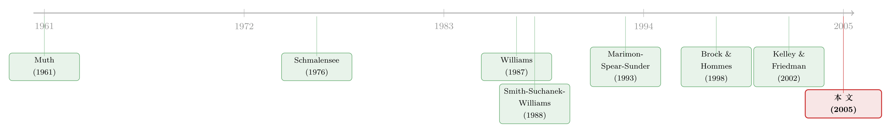

六个人，一道没人见过的方程，最后却写出了同一种预期
本文读的是 Hommes, Sonnemans, Tuinstra & van de Velden (2005, RFS)：让六个互不相识的人去预测同一只资产的价格，他们既不知道价格是怎么被算出来的，也不知道彼此是谁——可实验结束时，同一组里的六个人，竟不约而同地用上了同一套预测规则。价格因此或慢慢爬向基本面、或围着它来回振荡、甚至永不收敛；而真正稳定地被「协调」出来的，从来不是价格，而是预期本身。
1 一个让经济学家头疼的变量
经济学里有一个变量，几乎所有模型都离不开它，却几乎没人能直接看见——预期 (expectations)。
我们买股票，是因为我们「预期」它会涨；企业投资，是因为它「预期」未来有需求。更麻烦的是，这些预期不是凭空悬在那里的：当足够多的人预期某只资产要涨，他们的需求就真的会把价格抬上去。预期反过来制造了它所预期的那个结果。这种自我实现 (self-confirming) 的特性，在金融市场里尤其刺眼——凯恩斯当年那个著名的「选美比赛」比喻，说的正是这件事（关于这一点，可参见《选美比赛里的价格：当「我猜你猜我猜」写进了资产定价》）。
可问题在于：预期到底是怎么形成的？
教科书给的标准答案是 理性预期 (rational expectations)：人们知道市场运行的真实模型，于是用它算出对未来的数学条件期望，不犯系统性的错。这套假设漂亮、自洽，被 Muth (1961) 写进经济学之后统治了几十年。但它有一个致命的现实软肋——你怎么验证它？
真实市场里，个人预期几乎无法观测。退一步用调查数据（survey data）行不行？Frankel & Froot (1987) 调查过汇率预期，Shiller (1990) 调查过股市和房市预期。可调查数据有个根本的缺陷：你控制不了被调查者面对的「基本面」，也控制不了他手里有什么信息。换句话说，你永远不知道，他报给你的那个数字，到底是基于什么算出来的。
于是，一个自然的问题是：能不能把预期形成这件事，搬进实验室？
2 把预期从市场里「剥」出来
这正是本文的做法，也是它最聪明的地方。
作者设计了一个极简的实验。每组 6 名被试，被告知自己是某个养老基金的「预测顾问」。基金可以把钱投在无风险资产（银行账户，无风险毛回报率 R = 1 + r），也可以投在一只无限期存续、派发不确定红利的风险资产上。被试唯一的任务，就是预测下一期这只资产的价格 p_{t+1}。
注意这里的精妙之处：被试只做预测，不做交易。
这是全文的「手术刀」。真实市场里，交易者同时在做两件事——预测价格、并据此交易。两件事搅在一起，你拿到的数据里既有预期、又有投机行为、还有需求供给的扰动，根本分不清。本文把「交易」整个外包给了计算机：你只管报一个预测，计算机替你的养老基金算出该买多少、再算出市场出清价。于是数据里剩下的，是几乎「干净」的预期。
被试知道什么？他们知道平均红利 ȳ 和利率 r（这两个是公开信息，足够他们算出基本面价格），知道过去所有的真实价格和自己过去所有的预测，也被告知「你预测得越高，基金投在风险资产上的钱就越多」。
被试不知道什么？他们不知道价格出清的具体方程，不知道其他基金的投资策略，甚至不知道价格还取决于别人的预测——他们不知道有几个养老基金，也不知道同组另外五个人是谁。
报酬呢？按预测误差给。每期得分是一个被截断的二次计分规则：
$$ e_{ht} = \max\left\{ 1300 - \frac{1300}{49}\left(p_t - p_{ht}^e\right)^2,\; 0 \right\} $$
预测误差的绝对值一旦超过 7，这一期就颗粒无收。1300 分约等于 0.5 欧元。整个实验跑 51 期，10 组共 60 名被试（多是经济、化学、心理学的本科生），平均挣 21.46 欧元。
这套设计的好处是：实验者完全掌控基本面，而且基本面是恒定的——ȳ 和 r 都不随时间变。被试拥有计算出那个恒定基本面价格所需的全部信息。剩下唯一的未知数，就是人到底怎么形成预期。
3 价格是怎样被「算」出来的
现在来看那台被试看不见的「机器」。
价格由一个标准的、带异质信念的资产定价模型生成（教科书可参 Campbell, Lo & MacKinlay 1997）。资产的基本面价值 (fundamental value) 是未来红利流的贴现值，因为红利 i.i.d.、均值为 ȳ，所以它是个常数：
$$ p^f = \frac{\bar{y}}{r} $$
市场里有六个养老基金（各自挂钩一名被试），外加一小撮计算机化的基本面交易者 (fundamentalist traders)。后者永远预测基本面价格 p^f，像一股「稳定力量」把价格往基本面拽——他们的存在排除了泡沫无限膨胀的可能。关键在于，这群基本面交易者的权重 n_t 不是固定的，而是随价格偏离基本面的距离内生变化：
$$ n_t = 1 - \exp\left(-\frac{1}{200}\,\big|\,p_{t-1} - p^f\,\big|\right) $$
价格离基本面越远，n_t 越大，这股回拉的力量就越强；当 p_{t-1} = p^f 时 n_t = 0。给定基本面是 60 或 40，这个权重上界约为 0.26。
把这两股力量放进市场出清条件，就得到了本文的核心方程——也就是那台机器真正在做的运算：
其中 p̄^e_{t+1} = (1/6) Σ_{h=1}^6 p^e_{h,t+1} 是六个人对下一期价格的平均预测。
这个方程藏着两件要命的事。
第一，两期超前。请仔细看时序：第 t 期的价格 p_t，取决于被试在第 t 期提交的、对 t+1 期的预测 p^e_{h,t+1}。可被试做这个预测时，连 p_t 都还没揭晓——他手里最新的价格只到 p_{t-1}。也就是说，他在用 t-1 及更早的信息，去猜 t+1，中间隔着一个他还看不到的 p_t。
第二，也是整个实验的灵魂：自我实现。如果所有人都报高价，p̄^e_{t+1} 就高，出清价 p_t 也就真的高。「如果交易者预期高价，对风险资产的需求就高，在供给固定的前提下，实现的市场价格就真的高。」这句话听上去像废话，却正是投机市场最本质的脾气——价格在追逐预期，而预期又在追逐价格。
4 几把「尺子」：如果大家都用同一种规则
价格会演化成什么样，取决于六个人用什么规则形成预期。作者先在理论上推演了几个基准，作为后面对照实验结果的「尺子」。
理性预期。 既然框架里不会出现泡沫，理性预期下 E_t p_{t+1} = p^f，代回方程 (1)：
$$ p_t = p^f + \frac{1}{1+r}\,\varepsilon_t $$
价格就是围绕 p^f 的、方差为 (σ_ε / R)^2 = 100/441 的独立正态抽样——一条几乎贴着基本面的白噪声。但理性预期要求极高：你得知道整个模型、还得知道所有其他人的信念。它只有在大家成功「协调」到这个均衡上时才会出现。
朴素预期 (naive expectations)，最简单的一种，用上一个观测到的价格当预测：
$$ p_{h,t+1}^e = p_{t-1} $$
可以证明，若人人朴素，价格会（在无噪声时单调）收敛到基本面附近。
适应性预期 (adaptive expectations)，朝最新价格的方向调整：
$$ p_{h,t+1}^e = w\,p_{t-1} + (1-w)\,p_{ht}^e = p_{ht}^e + w\left(p_{t-1} - p_{ht}^e\right) $$
0 < w ≤ 1，朴素预期是 w = 1 的特例。
样本均值 (sample average)，给所有历史价格同等权重，收敛比朴素慢得多。
最后，也是最重要的一把尺子——二阶自回归预测规则：
$$ p_{h,t+1}^e = a_h + b_{h1}\,p_{t-1} + b_{h2}\,p_{t-2} $$
作者称之为 AR(2) 规则。它的妙处在于可以改写成一个有行为含义的形式：
$$ p_{h,t+1}^e = a + b\,p_{t-1} + d\,(p_{t-1} - p_{t-2}) $$
其中 b ≡ b₁ + b₂，d ≡ −b₂。这下意思就清楚了：前两项说「价格大致等于上一个观测值」，第三项则是在追趋势——
- 若
d > 0，他相信「涨势会延续」，这就是趋势外推者 (trend extrapolator) 或正反馈交易者； - 若
d < 0，他相信「涨上去的会跌回来」，这就是逆势者 (contrarian)。
别小看这个内生的 n_t。即便六个人用的全是线性规则，那个随偏离度变化的基本面交易者权重，也会给价格生成机制注入非线性。这正是为什么同样一群「线性预测者」，最后能跑出单调收敛、阻尼振荡、等幅振荡乃至发散等截然不同的动态。
5 反转：协调出来的不是价格，是预期
铺垫了这么久，实验结果才是真正的戏剧所在。
首先，价格显著偏离基本面。 10 组的价格轨迹五花八门，作者把它们归成三类：
- 单调收敛：第 2、5 组的价格从下方缓慢、单调地爬向基本面；
- 收敛性振荡：第 4、7、10 组围着基本面来回摆，但振幅逐期衰减；
- 持续振荡：第 1、6、8、9 组的振幅基本不衰减、甚至越摆越大，看不出收敛迹象。
（第 3 组介于两者之间，先振荡、后转为单调收敛。）光是这一点就够有意思了——同样的基本面、同样的噪声序列、同样的规则，仅仅因为坐在屏幕前的是不同的六个人，价格就走出了完全不同的命运。
但真正关键的一步，藏在个人预测里。 作者去看每一组内部六个人的预测有多「分散」，结果发现了一件出人意料的事：
组内不同预测策略之间的离散度，远小于被试平均犯下的预测误差。
翻译一下：六个人当然都在犯错，但他们犯的是同一种错。他们彼此报出的预测高度相似，哪怕这些预测一起偏离了基本面。换句话说——
于是反转出现了：被协调起来的，从来不是价格，而是预期本身。 在没有任何沟通、不知道彼此身份、甚至不知道价格依赖于他人预测的前提下，同一组的六个人，自发地收敛到了同一套预测策略上。进一步对个人规则做估计，发现他们用的多半就是上面那几把简单的线性尺子——朴素、适应性、或 AR(2)；而且组内的人倾向于用同一类规则。在那些持续振荡的组里，估出来的 d 显著为正——这正是趋势外推、正反馈交易的指纹，与资产收益的短期正自相关、动量现象一脉相承。
这就是本文标题「预期的协调 (coordination of expectations)」的全部分量：协调是真实发生的，但它发生在一个比「理性预期均衡」低得多的层次上。人们没有协调到「都预测基本面」，他们只是协调到了「都用同一条简单规则」。而一旦这条规则带点趋势外推，自我实现机制就会把它放大成围绕基本面的持续振荡。
6 文献脉络
把这篇论文放回它所在的那条线里，会看得更清楚。
源头是 Muth (1961) 的理性预期假说——一个优雅却难以直接检验的理论支点。绕开调查数据的局限（Frankel & Froot 1987；Shiller 1990），一批学者转向了实验室。早期的预期形成实验各有侧重：Williams (1987) 让被试预测实验双向拍卖市场的合约价；Smith, Suchanek & Williams (1988) 那篇经典，则在实验资产市场里研究了投机泡沫的产生。

随后，Marimon, Spear & Sunder (1993) 与 Marimon & Sunder (1993, 1994, 1995) 在世代交叠的通胀经济里研究预期协调，找到了信念协调到「太阳黑子两周期均衡」的证据，也发现一条「简单规则」（如恒定货币增速）能帮助稳定经济。但这些研究有个共同的「不纯」之处：它们的市场均衡里，除了预期反馈，还掺着交易行为等其他人类行为。另一脉（Schmalensee 1976；Dwyer et al. 1993；Hey 1994；Kelley & Friedman 2002）则把预期形成单独拎出来，可代价是——忽略了预期反馈：被试预测的是一个外生过程，他们的预测不会反过来影响价格。
本文恰好卡在这两脉的交叉点上：既像后者那样只测预期、不掺交易，又像前者那样保留了预期反馈。它的理论骨架，则直接继承自 Brock & Hommes (1997, 1998) 的异质信念资产定价模型——那个内生的基本面交易者权重 n_t，正是 Brock-Hommes 框架里「策略权重随表现演化」思想的一个变体。
7 评论与延伸（Q&A + 研究方向）
(a) 几个可能的疑问
Q：被试既不知道价格公式、又不知道价格依赖别人的预测，那他们「协调」到底协调了个啥？
协调的不是显性沟通，而是预测规则的趋同。每个人都只盯着同一段公共历史（过去的价格序列）去外推，又都倾向于用最省脑子的线性规则，于是六条独立的「最优反应」在同一段数据上收敛到了相似的形状。这是一种由共同信息+共同启发式逼出来的「无意识协调」，比理性预期均衡要弱，却足以驱动价格动态。
Q：这和理性预期到底差在哪？说人家「非理性」公平吗？
差在两点：理性预期要求知道真实模型、且不犯系统性误差。实验里被试系统性地偏离基本面、且预测里带趋势外推，所以不满足。但作者很克制，没把这叫「非理性」，而是「有限理性 (boundedly rational)」——人们用的是简单、稳健、在大多数环境里凑合管用的经验法则，只是这套法则在自我实现的反馈环里会被放大成振荡。
Q：三类不同的价格动态（收敛/阻尼振荡/持续振荡），会不会只是噪声运气不同？
不太可能。所有组用的是同一串需求/供给冲击实现值（
ε_t），基本面也只有 60 和 40 两种。所以组间差异不来自噪声，而来自人——更准确地说，来自这一组人协调到了哪一类规则上。带正d（趋势外推）的组更容易持续振荡，这是结果而非偶然。
Q：内生的基本面交易者权重 n_t 是不是在「帮倒忙」地制造了结果？
它确实是动态的关键，但方向是「稳定」而非「制造混乱」：
n_t随偏离度上升，把价格往基本面拽，排除了泡沫无限发散。真正制造振荡的是被试的趋势外推。n_t的非线性只是解释了「为什么即便规则是线性的，价格也能呈现丰富的非线性动态」——它是放大器的「限幅器」，不是信号源。
Q：报酬按二次预测误差给，会不会扭曲了被试的行为？
作者特意说明（脚注 2），按二次预测误差付费，等价于（差一个常数）按交易者的风险调整后利润付费。也就是说，这套计分并非凭空设的，而是和「让你的养老基金赚得多」内在一致——预测得准，基金的风险调整收益就高。
Q：只有 60 个被试、10 组，样本会不会太小，结论能外推到真实市场吗？
这是实验金融的通病，本文也不例外。它的强项是内部有效性（干净地识别出「预期反馈下会发生协调」这一机制），而非外部有效性。把它当成对一个因果机制的存在性证明更合适——它告诉你「这种协调能发生、且会驱动价格偏离」，而不是「真实市场的振荡幅度就是这么大」。
(b) 几个可能的研究问题与提案
1. 把实验室里的「外推 vs 逆势」尺子，搬到真实交易数据上。
- 【经济故事】本文在受控环境里量出了个人的 d（趋势外推系数）。一个自然的问题是：真实投资者身上能不能识别出同样的异质性？近年已有人沿这条路走（可参见《外推者与逆向者：一把在实验室里量出来的尺子，丈量真实世界的买卖》）。
- 【可行性】中。需要个人层面的下单/持仓数据（如券商账户面板），用类似 AR(2) 的设定估计每个账户的 d，再看它能否预测其交易表现与持仓波动。数据可得性是主要瓶颈。
2. 给公司债/信用市场做一个「预期反馈」实验。 - 【经济故事】本文的资产是抽象的「风险资产」。信用资产多了一层违约期权的非线性，外加流动性维度——当六个人都预期利差走阔，做市商的报价会不会真的把利差推宽，形成信用市场版的自我实现振荡？ - 【可行性】中。实验框架现成（只需把出清机制换成一个带违约/流动性的定价核），但参数校准和被试对信用概念的理解门槛较高，需要更精细的指导语设计。
3. 引入「外资」式异质信息，看协调会不会被打破。 - 【经济故事】本文六个人面对的是完全相同的公共信息。如果给其中一两个人喂一点关于基本面的私有信号（模拟外资/知情投资者），协调还会发生吗？是私有信息持有者把大家「拽」回基本面，还是反而被多数的外推者裹挟？ - 【可行性】高。只需在现有实验里给部分被试额外信息，是一个干净的二乘二处理设计，识别清晰、改动成本低。
4. 团队 vs 个人：协调是被强化还是被瓦解？ - 【经济故事】真实的养老基金决策往往由团队做出。把「一人一组」换成「一小组一个预测」，趋势外推与过度反应会被团队讨论熨平，还是被群体动力学放大？ - 【可行性】高。文献里已有团队对信念过度反应影响的探讨（可参见《三个臭皮匠，反而没那么容易上头？——团队如何驯服信念里的「过度反应」》），把它嫁接到本文的反馈环境里是顺理成章的一步。
我的判断
这篇论文的贡献，是用一把极其克制的「手术刀」，干净地分离出了一个一直说不清的机制：在预期反馈存在的前提下，一群互不沟通的人会自发协调到同一套简单预测规则上，并因此把价格推离基本面。 它最漂亮的地方不在于「价格偏离基本面」这个结论本身（这早不新鲜），而在于它证明了偏离背后是预期的协调，而非各行其是的混乱——组内预测离散度远小于平均误差，这个对比是全文最有说服力的一击。
对识别，我有两点保留。其一，那个内生的基本面交易者权重 n_t 是研究者外生设定的，价格动态在多大程度上是「人的外推」驱动、在多大程度上是这条 n_t 曲线的形状驱动，二者纠缠在一起，难以完全拆开；换一条 n_t 设定，三类动态的边界可能就挪位了。其二，被试是本科生、报酬不高、且明确被告知信息有限，他们的外推未必能代表真金白银下的专业投资者——尽管已有证据表明提高赌注反而可能让人「更上头」（参见《当真金白银上场，人反而更「上头」了》）。
后续我最想看到的，是把这套「只测预期、保留反馈」的范式，接到有私有信息异质性的环境里去：当少数知情者遇上多数外推者，自我实现的协调究竟会被纠偏，还是会把知情者也卷进振荡？这一步，恰好是从实验室通向真实市场最该补上的那一块。
参考文献
Brock, W. A., and C. H. Hommes (1997). Rational Routes to Randomness. Econometrica 65(5), 1059–1095.
Brock, W. A., and C. H. Hommes (1998). Heterogeneous Beliefs and Routes to Chaos in a Simple Asset Pricing Model. Journal of Economic Dynamics and Control 22(8–9), 1235–1274.
Campbell, J. Y., A. W. Lo, and A. C. MacKinlay (1997). The Econometrics of Financial Markets. Princeton University Press.
Frankel, J. A., and K. A. Froot (1987). Using Survey Data to Test Standard Propositions regarding Exchange Rate Expectations. American Economic Review 77(1), 133–153.
Hommes, C., J. Sonnemans, J. Tuinstra, and H. van de Velden (2005). Coordination of Expectations in Asset Pricing Experiments. Review of Financial Studies 18(3), 955–980.
Kelley, H., and D. Friedman (2002). Learning to Forecast Price. Economic Inquiry 40(4), 556–573.
Marimon, R., S. E. Spear, and S. Sunder (1993). Expectationally Driven Market Volatility: An Experimental Study. Journal of Economic Theory 61(1), 74–103.
Marimon, R., and S. Sunder (1995). Does a Constant Money Growth Rule Help Stabilize Inflation? Carnegie-Rochester Conference Series on Public Policy 43, 111–156.
Muth, J. F. (1961). Rational Expectations and the Theory of Price Movements. Econometrica 29(3), 315–335.
Schmalensee, R. (1976). An Experimental Study of Expectation Formation. Econometrica 44(1), 17–41.
Shiller, R. J. (1990). Speculative Prices and Popular Models. Journal of Economic Perspectives 4(2), 55–65.
Smith, V. L., G. L. Suchanek, and A. W. Williams (1988). Bubbles, Crashes and Endogenous Expectations in Experimental Spot Asset Markets. Econometrica 56(5), 1119–1151.
Williams, A. W. (1987). The Formation of Price Forecasts in Experimental Markets. Journal of Money, Credit and Banking 19(1), 1–18.